Entanglement Entropy
in
Abelian Higher Gauge Theories
Instituto de Física - Universidade de São Paulo
USP, September 30,2019.
Outline
Outline
- Review
- Topological Order
- Toric Code and Quantum Double Models (QDMs)
- Topological Entanglement Entropy (TEE)
- Abelian Higher Gauge Theories
- by Example
- Model Definition
- Ground State Degeneracy
- Entanglement Entropy
- Reduced Density Matrix
- Entanglement Entropy
- Examples \(\longrightarrow\) TEE
- Final Remarks
Review
Topological Order
- States of Matter are classified into phases.
- Phases of Matter \(\longleftrightarrow\) internal structure (order), for instance:

Solid: Strongly Correlated.
Gas: No Correlation among its constituents.
- Landau-Ginzburg \(\longrightarrow\) Symmetry Breaking Scheme
Quantum phases of matter \((T=0)\):
- Dynamics \(\longrightarrow\) governed by \(H\), exclusively.
- Phase transitions \(\longrightarrow\) quantum fluctuations.
- \(\Longrightarrow\) Landau Scheme: \((G_{\Psi}, G_{H})\)
- Example: 2D Ising model
\[H= -J\sum_{i} \sigma^z_{i} \sigma^z_{i+1} - h \sum_{i} \sigma^x_{i}\]
\(h=0: \) (anti-)ferromagnetic phase: \(GSD = 2\) and NO global \(\mathbb{Z}_2\) symmetry
\(h= \infty: \hbox{ } GSD=1 \) and global \(\mathbb{Z}_2\) symmetry
There are systems that do NOT fit in \((G_{\Psi}, G_{H})\)
Example: (Tsui, et. al. '82)
Fractional Quantum Hall Effect (Nobel Prize 1998)
They are called Topological Phases of Matter
Haldane phase in spin chains \(\hbox{ }\longrightarrow \) (Nobel Prize 2016)
We focus on Topological Order
- Gapped quantum phases
- Long Range Entanglement (LRE)
- Non- Local order parameters
- Observables \(\longleftrightarrow\) Topological Invariants
Some of such Observables:
- Topological Ground State Degeneracy: \(GSD\)
- Statistics of Excited States \((2+1)D\;\;\; (3+1)D\)
- Topological Entanglement Entropy \(TEE\)
Topological order is often studied through lattice models:
- Quantum Double Models (Kitaev, '97)
- String Nets (Levin, Wen '06)
- 2-Gauge Theories in 3D (Leeds, USP)
Toric Code and QDMs
Simplest examples of lattice models with topological features.
- 2D oriented lattice (discretization of a closed manifold)
- Place degrees of freedom at links \(\mathcal{H}_i = \text{span}(\lvert 1 \rangle),\lvert -1 \rangle)\)
- Global Hilbert space: \(\mathcal{H}= \bigotimes_{i} \mathcal{H}_i\)
- Hamiltonian \(H:\mathcal{H}\rightarrow\mathcal{H}\)
\[H= -\sum_{v}A_v - \sum_{p} B_p\]
- Graphical representation of states:
2D Lattice with local degrees of freedom.
Action of local operators:
\(H= -\sum_{v}A_v\) \(-\sum_{p} B_p\)
Action of local operators:
\(H=\) \(-\sum_{v} A_v\)\(-\sum_{p} B_p\)

Thus, gauge transformations create loops.
Ground State(s)
- The ground state subspace \(\mathcal{H}_0 \subset \mathcal{H}\) is characterized by: \[\mathcal{H}_0 = \{\lvert \Psi \rangle \in \mathcal{H} \;\; |\; B_p\lvert \Psi \rangle = \lvert \Psi \rangle,\; A_v \lvert \Psi \rangle= \lvert \Psi \rangle,\; \forall v,p \}\]
- Closed loop states fullfill the \(B_p\) condition, but not the \(A_v\) one:
- A ground state is obtained by applying all gauge transformations:
Are there more ground states?
When the model is defined on the surface of a Torus, there are three additional ground states.
\[\lvert \Psi_1 \rangle = X(C_1) \lvert \Psi_0 \rangle, \] \[\lvert \Psi_2 \rangle = X(C_2) \lvert \Psi_0 \rangle,\] \[\lvert \Psi_{1,2} \rangle = X(C_1) X(C_1) \lvert \Psi_0 \rangle,\]
where \(X(C)= \bigotimes_{i \in C} \sigma_i^x\)
In general, \(GSD = 2^{2g},\) where \(g\) is the genus of the manifold.
A TOPOLOGICAL feature.
Quantum Double Models
- 2D oriented lattice \(K\)
2D Lattice with local degrees of freedom. - Place \(\lvert g \rangle\) with \( g \in G\) at links \(l \in \Lambda_1\) \[\mathcal{H}_i = \{\lvert g \rangle\}\]
- Global Hilbert space: \(\mathcal{H}= \bigotimes_{i} \mathcal{H}_i\)
- Hamiltonian \(H:\mathcal{H}\rightarrow\mathcal{H}\)
\[H= -\sum_{v}A_v - \sum_{p} B_p\]
- TORIC CODE: \(G = \mathbb{Z}_2\)
- Topological \(GSD\)
- Lattice Gauge Theory with gauge group \(G\)
Entanglement Entropy
Topological content
Topological order \(\longleftrightarrow\) Long Range Entanglement
How to quantify entanglement within quantum states?
Entropy!
Classical (Shannon)
\(X = \{x_1, \dots, x_n\}\) and \(p_i, \, i=1,\dots, n\) their probabilities:
\(H(X)= - \sum_{i =1}^{n} p_i \log_b(p_i) \)
Quantum (von Neumann)
Density matrix \(\rho\) \(\rightarrow\) quantum state
\[S(\rho) = - \text{Tr}\left(\rho \log \rho\right)\]
Entanglement Entropy
Let \(\rho\) a quantum state on a biparte system
Bipartite system
Reduced density matrix: \[\; \rho_A = Tr_B(\rho)\]
von Neumann entropy: \[S_A = S(\rho_A) = -\text{Tr}(\rho_A \log \rho_A)\]
\(\rho = \rho_A \otimes \rho_B\) is a product state \(\Leftrightarrow S_A = 0\)
\(\rho\) is entangled \(\Leftrightarrow S_A > 0\)
Topological Entanglement Entropy
Entanglement entropy of the Toric Code
\(H= -\sum_{v}A_v - \sum_{p} B_p\)
Density matrix: \(\;\;\rho = \dfrac{1}{GSD} \Pi_0\)
\(\Pi_0\) is the projector to the ground states: \[\Pi_0 = \prod_v A_v \prod_p B_p\]
The reduced density matrix: \(\rho_A = \text{Tr}_B\left(\rho\right)\)
|
Bipartition of the lattice |
\[\rho_A = \dfrac{1}{\text{dim}\mathcal{H}_A}\sum_{g_A \in \mathcal{G}_A} g_A\]
\[\rho_A^2 = \dfrac{|\mathcal{G}_A|}{\text{dim}\mathcal{H}_A}\, \rho_A\]
We can calculate the entanglement entropy: \[S_A = -\text{Tr} \left(\rho_A \log \rho_A \right)\]
\[S_A = \log \left(\dfrac{\text{dim} \mathcal{H}_A}{|\mathcal{G}_A|} \right) \]
\(S_A = \log(2^{4R-1})= 4R - 1\)
Area Law: \(4R\) Topological term: \(-1\)
Given a ground state of a gapped quantum many-body system with or without topological order...
Possibly in any dimension...
Entanglement entropy?
Area Law? Topological term?
We can (partially) answer this question
Give a closed formula for \(S_A\) for a large class of models
(In any dimension)
Abelian Higher Gauge Theories
by Example
Toric Code \(\longrightarrow\) QDMs \(\hbox{ }\longrightarrow\) Lattice Gauge Theories - gauge group \(G\)
Gauge Theories: source of examples for quantum models w/ Topological Order. Exactly solvable models
Abelian groups \(\longrightarrow\) we were able to construct more general quantum models \(\hbox{ } \longrightarrow \hbox{ }\)Topological Order
Abelian Higher Gauge Theories...
QDMs: 1-Gauge Theory
\(2D\) and \(3D\)
degrees of freedom at links: \(\hbox{ }\mathcal{H}_l=\{\lvert g\rangle\}, \; g \in G_1 \) \(\;\longrightarrow\;\mathcal{H}=\bigotimes_l\, \mathcal{H}_l \)

Gauge configurations |
Hamiltonian: \(H=\) \(- \sum_v A_v\) \(- \sum_p B_p\)
1- Gauge Transformations: \(A_v\)
|
Located at vertices |
Act on all adjacent links |
QDMs: 1-Gauge Theory
\(2D\) and \(3D\)
degrees of freedom at links: \(\hbox{ }\mathcal{H}_l=\{\lvert g\rangle\}, \; g \in G_1 \) \(\;\longrightarrow\;\mathcal{H}=\bigotimes_l\, \mathcal{H}_l \)
|
Gauge configurations |
Hamiltonian: \(H=- \sum_v A_v\) \(- \sum_p B_p\)
1- Holonomies: \(\hbox{ }\; B_p\)
|
Located at plaquettes |
\(\text{1-hol}= abc^{-1}d^{-1} \in G_1\)
1,2-Gauge Theory (3D)
degrees of freedom at links: \(\hbox{ }\mathcal{H}_l=\{\lvert g\rangle\}, \; g \in G_1 \)
degrees of freedom at plaquettes: \(\hbox{ }\mathcal{H}_p=\{\lvert \alpha\rangle\}, \; \alpha \in G_2 \).
\(\mathcal{H}=\bigotimes_l\, \mathcal{H}_l \bigotimes_p\, \mathcal{H}_p \)
Gauge configurations |
Hamiltonian:
\(H=\) \(- \sum_v A_v\) \(-\sum_l A_l -\sum_p B_p -\sum_c B_c \)
1- Gauge Transformations: \(A_v\)
|
Located at vertices |
Act on all adjacent links |
1,2-Gauge Theory (3D)
degrees of freedom at links: \(\hbox{ }\mathcal{H}_l=\{\lvert g\rangle\}, \; g \in G_1 \)
degrees of freedom at links: \(\hbox{ }\mathcal{H}_p=\{\lvert \alpha\rangle\}, \; \alpha \in G_2 \).
|
\(\mathcal{H}=\bigotimes_l\, \mathcal{H}_l \bigotimes_p\, \mathcal{H}_p \)
Gauge configurations |
Hamiltonian:
\(H=- \sum_v A_v\) \(-\sum_l A_l\)\( -\sum_p B_p -\sum_c B_c \)
2- Gauge Transformations: \(A_l\)
|
Located at links |
Act on all adjacent plaquettes |
1,2-Gauge Theory (3D)
degrees of freedom at links: \(\hbox{ }\mathcal{H}_l=\{\lvert g\rangle\}, \; g \in G_1 \)
degrees of freedom at links: \(\hbox{ }\mathcal{H}_p=\{\lvert \alpha\rangle\}, \; \alpha \in G_2 \).
|
Gauge configurations |
Hamiltonian:
\(H=- \sum_v A_v -\sum_l A_l \,\)\( -\sum_p B_p\) \(-\sum_c B_c \)
1- Holonomies: \(B_p\)
|
Located at plaquettes |
1,2-Gauge Theory (3D)
degrees of freedom at links: \(\hbox{ }\mathcal{H}_l=\{\lvert g\rangle\}, \; g \in G_1 \)
degrees of freedom at links: \(\hbox{ }\mathcal{H}_p=\{\lvert \alpha\rangle\}, \; \alpha \in G_2 \).
|
Gauge configurations |
Hamiltonian:
\(H=- \sum_v A_v -\sum_l A_l -\sum_p B_p\) \(-\sum_c B_c \)
2- Holonomies: \(B_c\)
|
Located at cubes |
Our approach
We are able to treat the most general case:

Gauge configurations |
Degrees of freedom (possibly) at all elements of the lattice
Chain complexes of Abelian groups
Key concepts:
- Gauge configurations
- Gauge Transformations
- Holonomies
Model Definition
Lattice \(\;\;\; \longrightarrow \) Chain Complex \(\; (C(K),\partial)\)
\[C_3 \xrightarrow{\,\partial_3}C_2 \xrightarrow{\,\partial_2\,}C_1 \xrightarrow{\,\partial_1\,}C_0\,\,\,\,\]
Higher Gauge group \(\;\; \longrightarrow\) Chain Complex of Abelian groups, for instance:
\[G_3 \xrightarrow{\,\partial_3}G_2 \xrightarrow{\,\partial_2\,}G_1 \xrightarrow{\,\partial_1\,} G_0 \,\,\,\,\]
Gauge configurations \(\;\;\; \longrightarrow \) maps between the complexes

These maps form a group \(\text{hom}(C,G)^0\)
Lattice \(\;\;\; \longrightarrow \) Chain Complex \(\; (C(K),\partial)\)
\[C_3 \xrightarrow{\,\partial_3}C_2 \xrightarrow{\,\partial_2\,}C_1 \xrightarrow{\,\partial_1\,}C_0\,\,\,\,\]
Higher Gauge group \(\;\; \longrightarrow\) Chain Complex of Abelian groups, for instance:
\[G_3 \xrightarrow{\,\partial_3}G_2 \xrightarrow{\,\partial_2\,}G_1 \xrightarrow{\,\partial_1\,} G_0 \,\,\,\,\]
Gauge transformations \(\;\;\; \longrightarrow \) maps between the complexes
These maps form a group \(\text{hom}(C,G)^{-1}\)
Lattice \(\;\;\; \longrightarrow \) Chain Complex \(\; (C(K),\partial)\)
\[C_3 \xrightarrow{\,\partial_3}C_2 \xrightarrow{\,\partial_2\,}C_1 \xrightarrow{\,\partial_1\,}C_0\,\,\,\,\]
Higher Gauge group \(\;\; \longrightarrow\) Chain Complex of Abelian groups, for instance:
\[G_3 \xrightarrow{\,\partial_3}G_2 \xrightarrow{\,\partial_2\,}G_1 \xrightarrow{\,\partial_1\,} G_0 \,\,\,\,\]
Holonomy values \(\;\;\; \longrightarrow \) maps between the complexes

These maps form a group \(\text{hom}(C,G)^{1}\) not the actual measurement!
It turns out that the chain complex
\[\text{hom}(C,G)^{1}\xrightarrow{\delta^{-1}} \text{hom}(C,G)^{0} \xrightarrow{\delta^{0}} \text{hom}(C,G)^{1}\]
encodes all essential information about the Gauge theory.
where: \(\;\hbox{ }(\delta^p h)_n = h_{n-1}\circ \partial^C_n - (-1)^p\, \partial_{n-p}^G \circ h_n\)
It Provides the Hilbert space, via elements in \(\text{hom}(C,G)^{0}\), for instance
\[\mathcal{H}= \bigotimes_{v,l,p,c}\mathcal{H}_v\otimes\mathcal{H}_l\otimes\mathcal{H}_p\otimes\mathcal{H}_c\]
Hamiltonian: \[H= - \sum_{n} \sum_{x \in K_n} A_x - \sum_{n}\sum_{y \in K_n}B_y\]
Turns out that the chain complex
\[\text{hom}(C,G)^{1}\xrightarrow{\delta^{-1}} \text{hom}(C,G)^{0} \xrightarrow{\delta^{0}} \text{hom}(C,G)^{1}\]
encodes all essential information about the Gauge theory.
Hamiltonian: \[H= - \sum_{n} \sum_{x \in K_n} A_x - \sum_{n}\sum_{y \in K_n}B_y\]
Ground states: \(\lvert \psi \rangle \in \mathcal{H}\), such that: \(\;\;\;\Pi_0 \lvert \psi \rangle = \lvert \psi \rangle \)
Where: \[\Pi_0 = \prod_n \prod_{x \in K_n} A_x\prod_{y \in K_n}B_y\]
Ground State Degeneracy
\[\text{hom}(C,G)^{1}\xrightarrow{\delta^{-1}} \text{hom}(C,G)^{0} \xrightarrow{\delta^{0}} \text{hom}(C,G)^{1}\]
arxiv:1711.04186 \(\hbox{ }GSD = \dfrac{|\text{ker}\delta^0|}{|\text{Im} \delta^{-1}|}\)
\(\text{ker} \delta^0 \;\; \rightarrow\) configurations with trivial holonomy
\(\text{Im} \delta^{-1} \;\; \rightarrow\) configurations that come from gauge transformations
Moreover: \(\;\;\;\;GSD= \prod_i |H^i(C,H_i(G))|\) (R. Brown)
\(|H^i(C,H_i(G))|\) are usual cohomology groups.
\(\;\;H_i(G)\) are the Homology groups of the higher group \(G\)
Can we find the entanglement entropy?
Entanglement Entropy
Reduced Density Matrix
Reduced Density Matrix
Hamiltonian: \[H= - \sum_{n} \sum_{x \in K_n} A_x - \sum_{n}\sum_{y \in K_n}B_y\]

Bipartition of the complex |
Density matrix: \(\;\;\rho = \dfrac{1}{GSD} \Pi_0\)
Where: \[\Pi_0 = \prod_n \prod_{x \in K_n} A_x\prod_{y \in K_n}B_y\]
The reduced density matrix: \(\;\;\;\;\rho_A = \text{Tr}_B\left(\rho\right)\)
How to perform the partial trace?
To perform the partial trace, restrict the complex \(C(K)\) to a subcomplex \(C(K_A)\)
By doing so, we obtain a restricted version of the gauge theory:
\[\text{hom}(C_{\tilde{A}},G)^{1}\xrightarrow{\;\delta_{\tilde{A}}^{-1}\;} \text{hom}(C_A,G)^{0} \xrightarrow{\;\delta_A^{0}\;} \text{hom}(C_A,G)^{1}\]
\(\;\;\tilde{A} \;\longrightarrow\) Interior of region A. Only internal gauge transformations survive the trace
This naturally defines a restricted Higher Gauge theory in region \(A\)
\[H_{\tilde{A}} = \sum_{n=0}^{d} \sum_{x\in K_{n,\tilde{A}}}A_{n,x} - \sum_{n=0}^{d} \sum_{y\in K_{n,A}}B_{n,y}.\]
\[ GSD_{\tilde{A}}= \dfrac{\left|\ker \delta_{A}^0\right|}{\left|\text{Im}\, \delta^{-1}_{\tilde{A}}\right|}. \]
Counts the number of edge states in the entanglement boundary
+ topological contributions
Entanglement Entropy
Entanglement Entropy
Density matrix: \[\rho = \dfrac{1}{GSD}\left(\dfrac{1}{|\text{Im}\delta^{-1}|}\sum_{t }A_{t}\right)\left(\dfrac{1}{|\text{Im}\delta_1|}\sum_{m}B_{m}\right), \]
Reduced density matrix: \(\rho_A = \text{Tr}_B (\rho)\)
\[\rho_A = \dfrac{1}{GSD}\dfrac{\text{Tr}_B (\mathbb{1}_B)}{|\text{Im}\delta^{-1}|\, |\text{Im}\delta_1|}\sum_{p,q}A_p B_q\]
\[\rho_A = \dfrac{1}{GSD}\dfrac{\text{dim}(\mathcal{H}_B)}{|\text{Im}\delta^{-1}|\, |\text{Im}\delta_1|}\sum_{p,q}A_p B_q\]
Noting that: \(GSD |\text{Im}(\delta^{-1})||\text{Im}(\delta_1)| = \dim(\mathcal{H}) = \dim (\mathcal{H}_A)\dim (\mathcal{H}_B)\)
We obtain: \[\rho_A = \dfrac{1}{\dim(\mathcal{H}_A)}\left(\sum_{p, q }A_{p} B_{q}\right) \]
Entanglement Entropy
Reduced density matrix: \[\rho_A = \dfrac{1}{\dim(\mathcal{H}_A)}\left(\sum_{p, q }A_{p} B_{q}\right), \]
\[\rho_A^2 = \dfrac{1}{GSD_{\tilde{A}}}\; \rho_A\]
Entanglement Entropy:
\[S_A= \log \left(GSD_{\tilde{A}}\right)\]
where \(GSD_{\tilde{A}}\) counts the number of edge states in the entanglement boundary
+ topological contribution
Examples
Examples
- Toric Code or 1-Gauge theory with \(G_1=\mathbb{Z}_2\):
\(S_A = \log\left(GSD_{\tilde{A}}\right)=\log_2 \dfrac{2^{\partial A}}{2} = \partial A\) \(-1 \) - 1,2-Gauge Theory in 2D with \(G_1=\mathbb{Z}_2\) and \(G_2 = \mathbb{Z}_4\):
\(S_A = \partial A \)\(-1 \) - 1,2-Gauge Theory in 2D with \(G_1=\mathbb{Z}_2\) and \(G_2 = \mathbb{Z}_2\): \[S_A = \partial A\]
- 1,2,3- Gauge Theory in 3D with \(G_1 = G_2 = G_3 = \mathbb{Z}_4\):
\(S_A = \partial A \)\(-1 \) - Topological terms.
Final Remarks
2D Topological Order is well understood.
This is no longer true for higher dimensions.
In arxiv:1711.04186 we introduced Abelian Higher Gauge Theories
as a tool to explore higher dimensional quantum phases
In this work we show that quantum entanglement in these phases can be probed by \(S_A\)
Moreover, it is encoded in:
\[S_A= \log\left(GSD_{\tilde{A}}\right)\]
arxiv: 1907.01608
Is this formula valid for other quantum phases?
Beyond Topological Order
More exotic quantum phases, beyond topological order.
- arxiv: 1908.07601 Fracton-like quantum phases from gauge theories.
- \(S_A = \log\left(GSD_{\tilde{A}}\right)\) seems to be valid.
- (In preparation) Quantum many-body models sensitive to geometric features of the manifold.
- Entanglement Entropy \(\longrightarrow\) nature of entanglement in these non-topological phases.